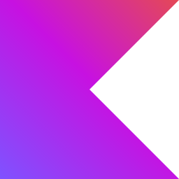
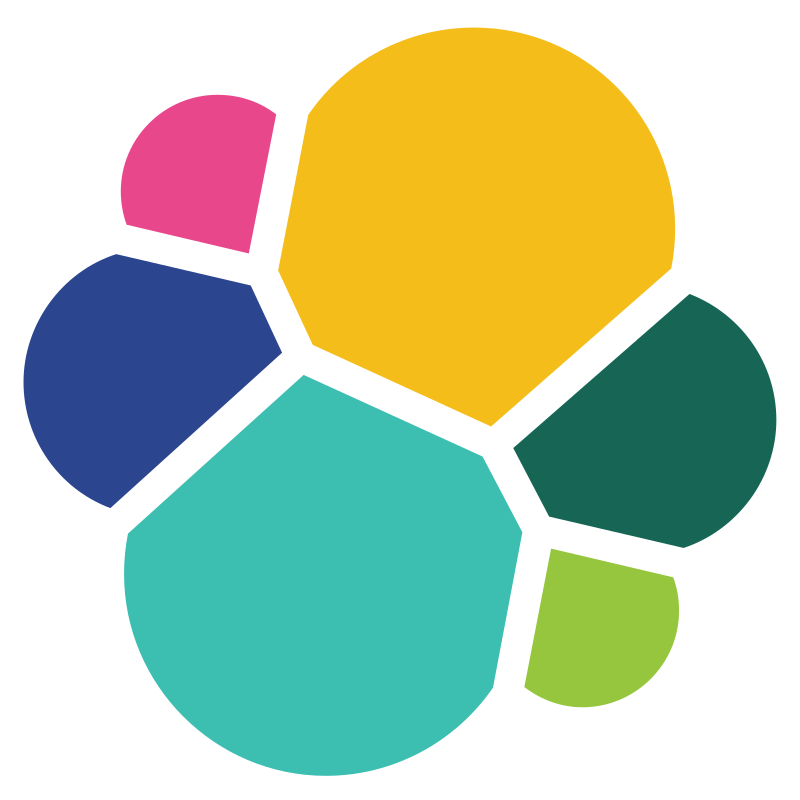

장소 검색 · 추천 아키텍처
Hybrid Search
RRF
무중단 색인
범례
구현 완료
구현예정
코드 공유
검색
결과
질의
순위
색인
원천 읽기
사용자
search-api :8080 · 읽기 · WebFlux


검색 API
키워드 + 벡터 동시 호출
RRF
랭킹 결합
앱 레이어
라이브러리
search-core
문서 스키마 · 브랜드
임베딩 e5-small · 색인 계약
임베딩 e5-small · 색인 계약
색인 쓰기 · 별도 아티팩트 2개
indexer-batch
전체 · 증분 색인
alias 스왑 · :8081
Spring Batch · MVC · JDBC
Spring Batch · MVC · JDBC
indexer-stream
이벤트 색인
Kafka · 구현예정
검색 인프라 · docker compose · kind · EKS
alias swap
무중단 색인

Elasticsearch
키워드 · 자동완성
KOMORAN 분석 플러그인
psp_index_meta · 계약 도장
KOMORAN 분석 플러그인
psp_index_meta · 계약 도장
Qdrant
벡터 검색
Redis
세션 · 인기 · 구현예정
compose 에만
compose 에만
PostgreSQL / PostGIS
원천 창고 · 거리
D
공공데이터포털
상가정보 · 인허가